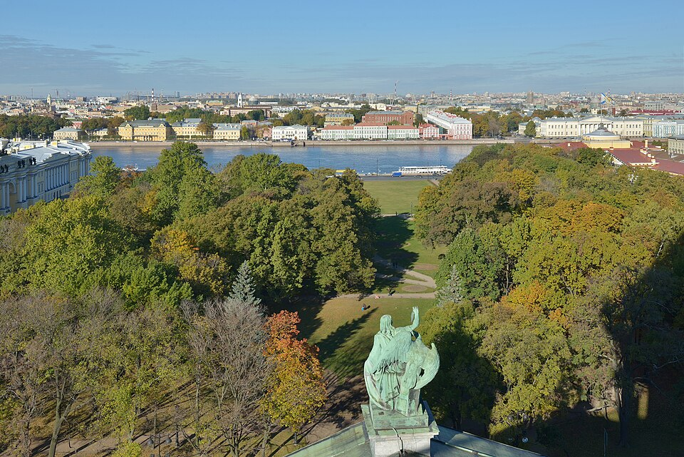

Город, который
хочется почувствовать.
Вдоль набережных, сквозь столетия.
Откройте свой Петербург — одну историю за другой.
Больше, чем
красивая открытка.
Петербург — это разговор воды и камня, имперского размаха и тихих дворов. Город, где за каждым поворотом начинается новая история.
Основанный Петром I в 1703 году в устье Невы, он стал морским выходом России к Балтике и одной из её культурных столиц. Исторический центр и связанные с ним ансамбли включены в список Всемирного наследия ЮНЕСКО в 1990 году.
От крепости к империи
Как на берегах Невы выросла новая столица России.
Расстояние и время ориентировочные. Идите через Кронверкский и Биржевой мосты, затем вдоль Университетской набережной к Дворцовому мосту. Время посещения музеев добавьте отдельно.
Остановитесь. Посмотрите ближе.
Таких мест пока нет. Попробуйте другой запрос или добавьте место в избранное.
У города свой ритм.
Будьте к нему готовы.
Самый хороший план — тот, в котором
есть место для спонтанной остановки.
Когда отправляться на прогулку +
Начните утром, чтобы не спешить. В конце мая и июне светлые вечера особенно длинные. Осенью и зимой закладывайте время на обогрев и выбирайте светлую часть дня.
Что взять с собой +
Удобную обувь, воду, заряженный телефон и ветровку. У Невы часто ветрено; дождевик пригодится даже при ясном утреннем небе.
Мосты, музеи и доступность +
Ночью в сезон навигации мосты могут быть разведены. Проверяйте расписание на сайте Мостотреста. Брусчатка и лестницы на спусках к воде могут затруднить прогулку с коляской. Часы работы, доступность и билеты уточняйте на официальных сайтах музеев.
Мостотрест ↗Как сохранить прогулку +
Нажимайте на сердечко у понравившихся мест и отмечайте посещённые остановки. Прогресс хранится в этом браузере. Для бумажной версии используйте кнопку ниже.
Истории с опорой на источники.
Тематический путеводитель об архитектуре и истории города. Маршрут составлен для самостоятельного внешнего осмотра.